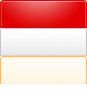

CSS Sprites技术
CSS Sprites在国内很多人叫css精灵或css雪碧。它是把网页中一些背景图片整合到一张图片文件中，再利用CSS的背景图片定位到要显示的位置。这样做可以减少文件体积，减少对服务器的请求次数，提高效率。
讲CSS Sprites之前，先把背景图片给搞清楚
#menu ul li a { background:#ccc url(images/nav_bg2.gif) 0 0 no-repeat; }
css背景属性缩写后如上所示，#ccc表示背景色；url（）里是背景图片路径；接下来的两个数值参数分别是左右和上下，第一个参数表示距左多少px，第二个参数表示距上多少，这和padding的简写方式是不 一样，一定不要弄混。另外再强调一点css中值为0可以不带单位，其它数值都必须带单位（line-height值为多少倍时，zoom，z-index除外）；no-repeat表示背景图片向哪个方向重复，此时为不重复。
还需说明一点的是定位图片位置的参数是以图片的左上角为原点的，理解了这些，CSS Sprites技术就基本上懂了，就是靠背景图片定位来实现的。把三张背景图片整合到一张上，如下图：
